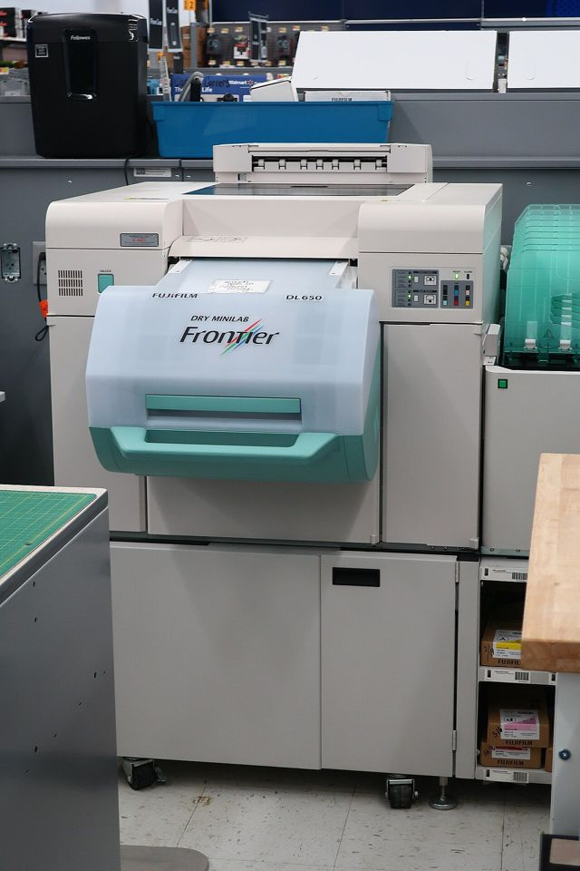

36 EXP. / 가이드 / 필름 사진 비용 계산: 한 롤, 한 장에 얼마
필름 사진 비용 계산: 한 롤, 한 장에 얼마
필름값과 현상·스캔비로 계산한 롤당·장당 비용

필름 사진의 비용은 필름값 + 현상·스캔비입니다. 이것을 컷 수(보통 36장)로 나누면 사진 한 장 값이 나옵니다. 아래 숫자는 모두 출처가 있는 가격으로 계산했습니다.
현상·스캔비: 국내 현상소 38곳 기준
6,000원35mm 컬러 현상+기본 스캔, 가운데 값 (36곳, 3,000원~13,000원)
9,000원35mm 컬러 현상+고해상 스캔, 가운데 값 (21곳, 6,000원~15,000원)
10,000원35mm 흑백, 가운데 값 (25곳, 5,000원~16,000원)
8,000원120 중형 컬러, 가운데 값 (20곳, 5,000원~11,500원)
필름별 한 롤 비용
필름값은 미국 판매가를 원화로 바꾼 값입니다. 국내 판매가는 공개 자료로 확인하기 어려워 이렇게 계산했습니다. 배송비와 세금은 들어 있지 않습니다.
| 필름 (판매가 · 판매처) | 필름값 | 현상·스캔 | 한 롤 | 한 장(36컷) |
|---|---|---|---|---|
| Kodak Gold 200$8.99 · Film Supply Club (미국) | 12,000원 | 6,000원 | 18,000원 | 500원 |
| Kodak UltraMax 400$9.99 · Film Supply Club (미국) | 13,300원 | 6,000원 | 19,300원 | 540원 |
| Kodak Portra 400$18.50 · Brooklyn Film Camera (미국) | 24,700원 | 6,000원 | 30,700원 | 850원 |
| CineStill 800T$17.99 · Film Supply Club (미국) | 24,000원 | 6,000원 | 30,000원 | 830원 |
| Kentmere Pan 400$8.49 · Film Supply Club (미국, 품절 표시) | 11,300원 | 10,000원 | 21,300원 | 590원 |
| Ilford HP5 Plus$10.00 · Film Supply Club (미국), 10롤 묶음 기준 1롤 | 13,400원 | 10,000원 | 23,400원 | 650원 |
직접 계산해 보기
가지고 있는 필름의 실제 값과 맡길 현상소의 가격을 넣어 보세요.
–한 롤 비용
–사진 한 장 비용
–전체 비용
비용을 줄이는 방법
- 하프프레임 카메라: 한 롤에 72장을 찍어 장당 비용이 절반 가까이 줄어듭니다. 하프프레임 카메라를 참고하세요.
- 기본 스캔으로 받기: 휴대폰·SNS용이라면 기본 스캔으로 충분합니다. 위 가운데 값 기준으로 고해상 스캔과 3,000원 차이가 납니다.
- 묶음으로 사기: 흑백 필름은 10롤 묶음이 1롤 가격보다 쌉니다. 예: HP5 Plus는 10롤 묶음 기준 1롤 $10.00입니다.
- 흑백은 집에서 현상: 처음 장비를 갖추면 그 뒤로는 롤당 비용이 크게 줄어듭니다. 집에서 흑백 필름 현상하기를 보세요.
- 스캔 없이 현상만: 직접 스캔한다면 현상만 맡길 수 있습니다. 예: 파란포토는 현상만 3,000원입니다. 방법은 필름 스캔 방법에 있습니다.
다른 가이드
필름 카메라 첫 롤 완주 가이드필름 카메라 처음 살 때 확인할 것35mm 필름 넣는 법과 되감기써니 16 노출법: 노출계 없이 찍기집에서 흑백 필름 현상하기필름 스캔 방법 4가지 비교필름 보관법과 공항 엑스레이